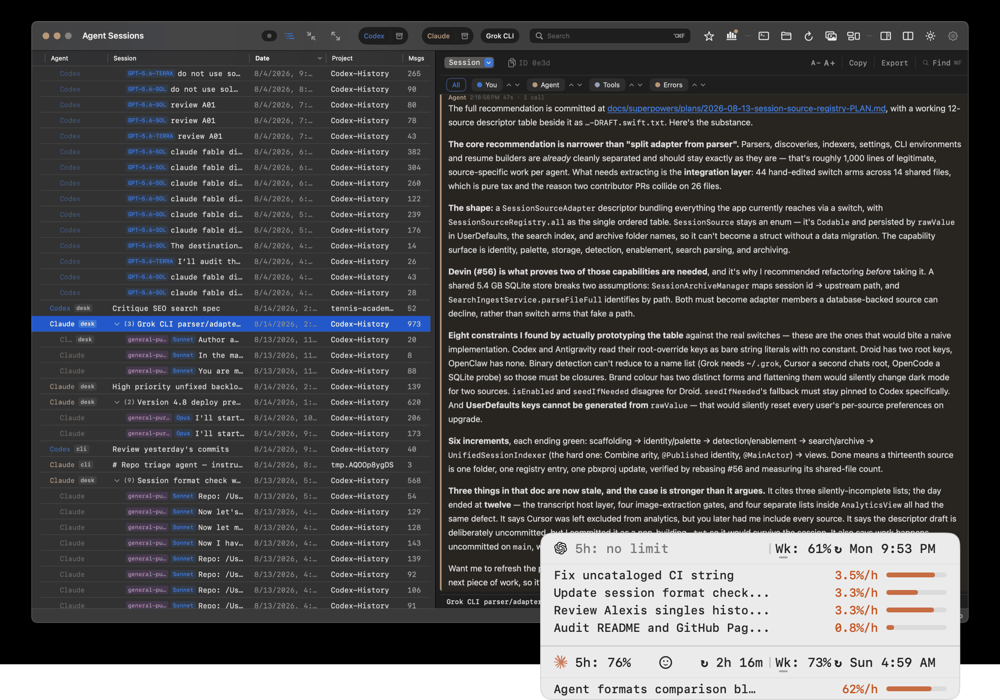
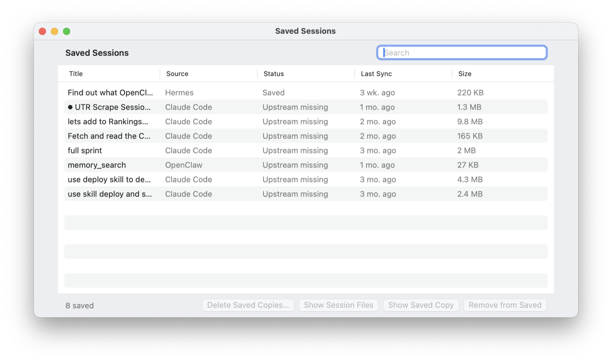
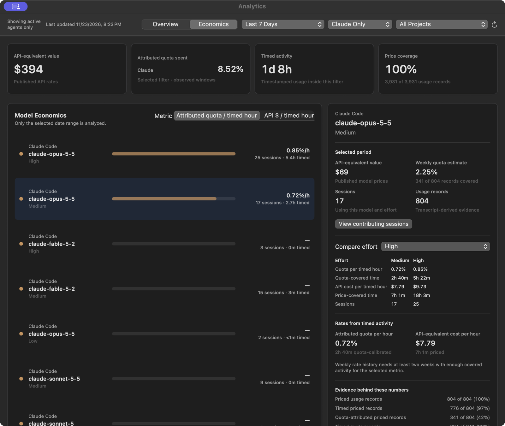
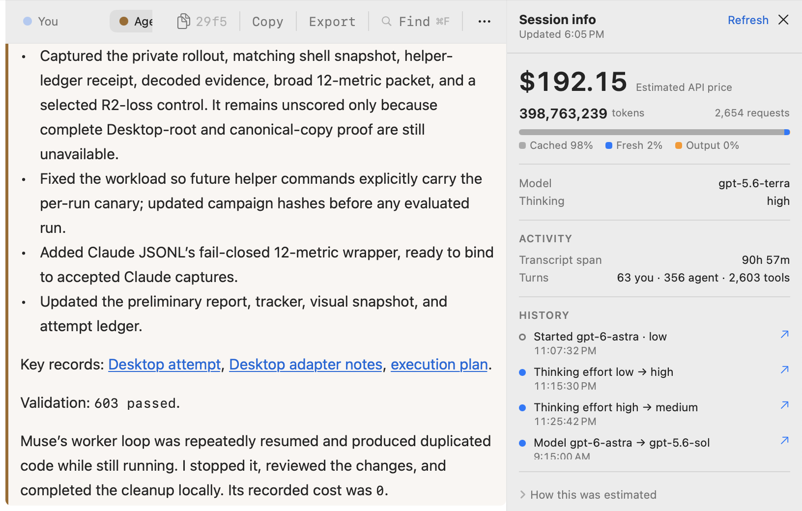

macOS 14 or later
Search local history from Codex, Claude Code, Cursor, and 13 other coding agents. Read the transcript and resume supported sessions.

Sixteen active agent formats and legacy Droid sessions, side by side and labelled with the surface they came from. Search and browsing work across every source; resume and image support depend on the source and installed CLI version.
Search terms, phrases, file paths, complete session IDs, prefixes, and Boolean queries across all agents. Return verifies the eligible local history and reports coverage. Inline images and the Image Browser keep supported visual output close to the transcript.
Resume supported CLI sessions in Terminal.app, iTerm2, Warp, Ghostty, or Macterm. Open Claude Code sessions directly in VS Code or Insiders with the Claude Code extension installed.
Find archived sessions, check their status, and restore them when you need them again.

See session trends, which agents you use, and when you use them. Economics compares API-equivalent value and attributed quota by agent, model, and thinking effort, with explicit timing and coverage limits.

| Agent | Local history | Resume | Quota Meter |
|---|---|---|---|
| Codex | Desktop · CLI · VS Code | Supported sessions | 5h · weekly · $/h |
| Claude Code | Claude Desktop · Claude Code CLI | Supported sessions | 5h · weekly · $/h |
| Cursor | Agents Window · CLI | Supported sessions | — |
| GitHub Copilot CLI | CLI | Supported sessions | — |
| OpenCode | Desktop · TUI | Supported sessions | Running sessions, rates |
| Antigravity | Desktop · CLI | Supported sessions | — |
| Pi | CLI | Supported sessions | — |
| Kimi Code | CLI | Supported sessions | — |
| Grok CLI | CLI | Supported sessions | — |
| Hermes | CLI | Supported sessions | — |
| OpenClaw | CLI | Browse only | — |
| Qwen Code | CLI | Active sessions (end-to-end unverified) | — |
| Devin CLI | CLI | Supported active sessions | — |
| fx | CLI | Command tested (interactive reopen unverified) | — |
| Cline | Desktop · CLI | Browse only | — |
| DeepSeek Harness | CLI | Browse only | — |
| Droid | Legacy CLI sessions | Browse only | — |
| Add your agent → | |||
The Quota Meter reads Codex and Claude usage windows and lists running OpenCode sessions with their token or cost rate; OpenCode limits are not metered yet. Every agent above is searchable, browsable, counted in Analytics, and has a Session Info surface with source-appropriate detail.
How fast each session burns your plan — and how much you have left. Quota Meter reads your Codex and Claude 5-hour and weekly limits alongside active-session burn, so one glance shows which sessions use your quota and when each limit resets. Keep it in view:
$ lens rates each model in a session separately, so an Opus orchestrator driving Sonnet subagents is costed at what each actually runs at rather than blended into one number.
What a supported agent session recorded, beside its transcript. Press ⇧⌘I and the panel starts with quick info for every source, then reads the session's own records when detailed telemetry is available:
The price is an estimate, not your plan bill.
Make it searchable, then return to the work that matters.
brew install --cask jazzyalex/agent-sessions/agent-sessions
Where each agent keeps its sessions, what Agent Sessions reads, and where the boundaries are.
How CLI, Desktop, and VS Code rollout history is read from ~/.codex/sessions.
Where OpenCode stores session data and how to browse old runs locally.
What Claude Code writes to local transcripts and where the boundary is.
How Cursor Agent transcripts are read from Cursor's local storage.
How Hermes sessions in ~/.hermes/state.db become searchable history.
How OpenClaw JSONL sessions are discovered, searched, and kept separate.
Where Copilot writes events.jsonl, and why its own SQLite store is not the transcript.
Two stores under ~/.gemini, and the sibling file that holds the untruncated text.